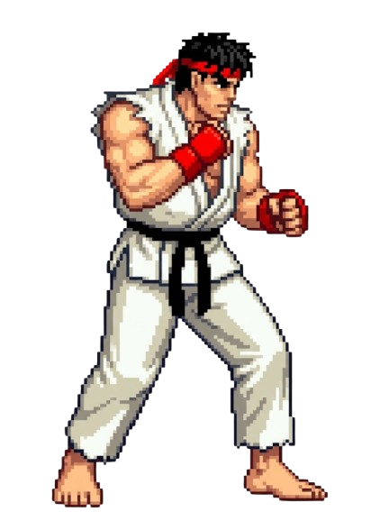
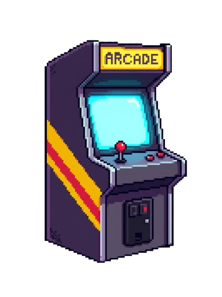
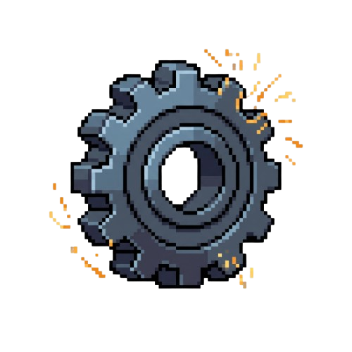

O StreetTracker revive a era de ouro das disputas locais, trazendo a emoção do fliperama para o conforto da sua casa com um placar definitivo para as suas partidas de Street Fighter II e uma Dashboard com dados acumulados.
Veja o que o sistema faz ➔Análise de desempenho e taxa de vitórias.
Cadastro rápido de lutas e rounds.

Processamento de dados em tempo real.
O interesse por jogos começou com os arcades clássicos. O projeto nasce da vontade de resgatar o couch multiplayer (1x1 local).
Valores principais escolhidos: Nostalgia, conexão real e rivalidade saudável, características marcantes do Street Fighter II.
A maior dificuldade foi estruturar toda a lógica do placar e unir o layout temático de fliperama com o processamento das partidas em tempo real.
A vitória veio ao superar os bugs técnicos e ver o placar registrar corretamente as vitórias, validando todo o esforço.
Gratidão especial ao meu pai, Denis Bertoluci, por ser minha maior inspiração para entrar no mundo da tecnologia.
Agradeço também aos professores e amigos pelo apoio constante para destravar o código durante a jornada.
PRESS START